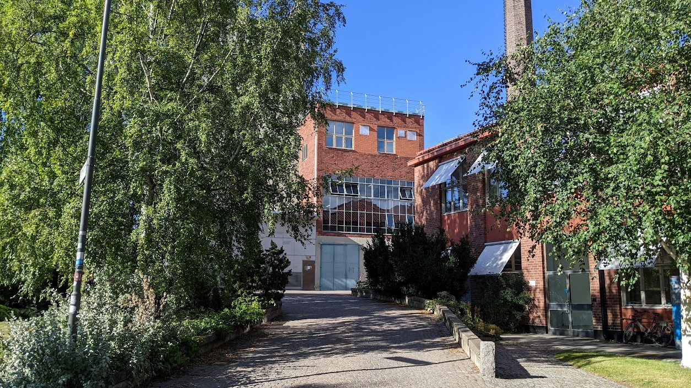

un|fold
When: Nobel Week Lights 2022
Where: Turbine Hall, KTH
Drottning Kristinas väg 14, Stockholm
un|fold is a multidimensional light and sound sculpture, created for the historic Turbine Hall at the KTH Royal Institute of Technology, as part of the Nobel Week Lights 2022. It contrasts the simplicity of digital actions that can be used to explain complex chemical processes with the actual complexity and intricacies of the software traces that perform these actions..
Page under construction.
The team